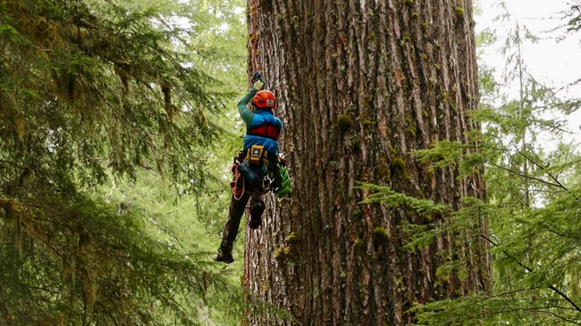

Cascadia
Analysis Lab
Density estimation, animal movement, and species distribution modeling — rigorous quantitative inference across mammals, birds, and amphibians of the Pacific Northwest.
From Data to Decisions
The Cascadia Analysis Lab translates wildlife monitoring data into the population estimates, species distributions, habitat models, and movement analyses that guide real management decisions. We are a collaborative group of quantitative ecologists, spatial analysts, and field biologists covering mammals, birds, and amphibians across the Pacific Northwest.
Our signature strength is density estimation using spatial capture-recapture (SCR) — a framework that integrates individual identity from noninvasive genetic samples or camera traps with precise spatial information to estimate animal density, survival, and movement simultaneously, without an assumed study area boundary.
We pair SCR with GPS telemetry analysis, occupancy and species distribution modeling, and LiDAR-based habitat characterization to link population dynamics directly to landscape structure. Joint species distribution models let us estimate whole communities at once rather than one species at a time — including from the multi-species detections that camera trap arrays, acoustic networks, and DNA metabarcoding produce.
Our analyses are conducted in R and Python using hierarchical Bayesian frameworks, and all outputs are documented to publication and regulatory standards.
Work With UsAnalytical Focus Areas
Three methodological specializations that define the work of the Cascadia Analysis Lab
Density Estimation & Spatial Capture-Recapture
Classical mark-recapture estimates detection probability but not density — it requires an assumed study area to convert counts to animals per unit area. Spatial capture-recapture solves this by modeling each individual's activity center and detection probability as a joint function of distance from sampling locations and landscape features. The result: an absolute density estimate in animals per km², free from arbitrary boundary assumptions.
Our Bayesian SCR implementations accommodate individual heterogeneity, sex-specific behavior, seasonal variation, and landscape permeability. We have estimated densities for wolverine, Pacific marten, fisher, mountain lion, wolf, black bear, and a growing list of Pacific Northwest species — combining DNA-based individual ID from the Cascadia Genetics Laboratory with SCR to produce estimates that are often impossible to obtain any other way.
Spatial Ecology & Animal Movement
Where animals go, and why, reveals the functional landscape they inhabit. We analyze GPS telemetry using continuous-time movement models (ctmm), autocorrelated kernel density estimators (AKDE), and integrated step selection functions — characterizing home range dynamics, habitat selection, dispersal, and connectivity at the individual and population level.
Our spatial ecology work integrates LiDAR-derived forest structure data, allowing us to link fine-scale canopy characteristics to wildlife space use at resolutions not possible with conventional remote sensing. This combination is especially powerful for forest-dependent species whose distributions and movements track structural features of old-growth and late-successional habitats.

Species Distribution Models
Where a species occurs, and why, is a different question from how many there are — and often the more consequential one for planning. We build species distribution and occupancy models that link detections to climate, topography, and fine-scale forest structure, then use them to project distributions across landscapes and under changing conditions.
This work draws on unusually deep bench strength. Matt Betts brings decades of forest landscape ecology and long-term bird monitoring, including the habitat-fragmentation and old-growth questions that make distribution modeling difficult. Rebecca Hutchinson works on the statistical and machine learning methods themselves — how to fit these models when detection is imperfect, sampling is opportunistic, and the data were never collected with modeling in mind.
Increasingly we fit joint species distribution models, which estimate many species at once and let information from common species inform inference about rare ones, while separating shared environmental responses from residual co-occurrence. These pair naturally with bulk DNA metabarcoding from the Cascadia Genetics Laboratory: a single sequencing run over environmental or scat samples yields community-wide detections across dozens of taxa at once — exactly the multi-species, presence-heavy data these models are built for.

Taxa & Research Groups
Our collaborative team covers three major taxonomic groups, each led by specialists with deep field and analytical expertise
Carnivores, Ungulates & Small Mammals
Large-scale mammal monitoring using GPS collaring, noninvasive genetic surveys, camera trap networks, and spatial capture-recapture. Focal taxa include Pacific marten, fisher, wolverine, mountain lion, wolf, black bear, and ungulates.
Traditional trapping and GPS collaring programs provide individual-based telemetry data for survival and movement analysis, complementing DNA-based density estimation.
Led by: Taal Levi • Katie Moriarty • Joshua TwiningBirds & Forest Landscape Dynamics
Point count surveys, mist netting, GPS tracking, and acoustic monitoring for birds — integrated with LiDAR-based forest structure characterization and landscape-scale occupancy models.
The Forest Landscape Ecology Lab brings additional expertise in forest disturbance, succession, and the ecological consequences of habitat change for bird communities.
Led by: Matt BettsAmphibians & Reptiles
Traditional visual encounter surveys, cover board arrays, and aquatic trapping — paired with eDNA-based species detection and metabarcoding for community-level amphibian assessments.
Occupancy modeling and abundance estimation for species of conservation concern, including obligate wetland and stream-associated amphibians of the Pacific Northwest.
Led by: Tiffany GarciaOur People
Quantitative ecologists, spatial analysts, and field biologists with deep expertise in Pacific Northwest wildlife systems


Matt Betts
Professor, Oregon State University
Forest Landscape Ecology Lab →

Joel Ruprecht
Research Scientist


Chris Sullivan
Director, Research & Academic Computing, OSU
OSU Research Computing →